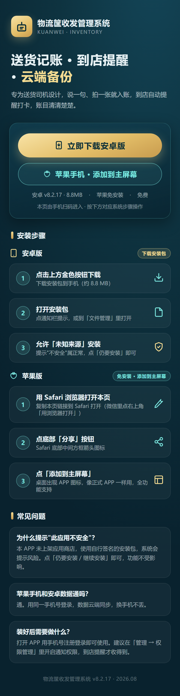
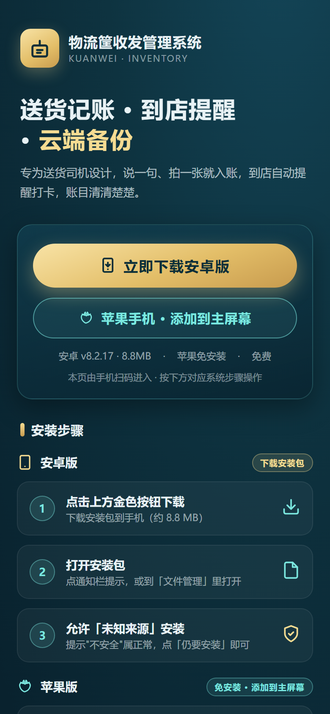

物流筐 · 下载页设计 #155
二维码跳转目标页 · 手机优先 · 深空蓝晶
v2 全页（新增苹果版）

v2 首屏（390x844）

v1 全页（对照）
v2 改动
：下载卡新增「苹果手机 · 添加到主屏幕」青色按钮（与安卓金色按钮并列）；安装步骤区拆成「安卓版 / 苹果版」两个平台卡，苹果三步（Safari 打开 → 分享 → 添加到主屏幕）配专属图标；FAQ 更新（苹果数据是否与安卓互通）。
待确认
：① 苹果按钮样式/位置是否合适 ② 是否要加「更新日志」入口